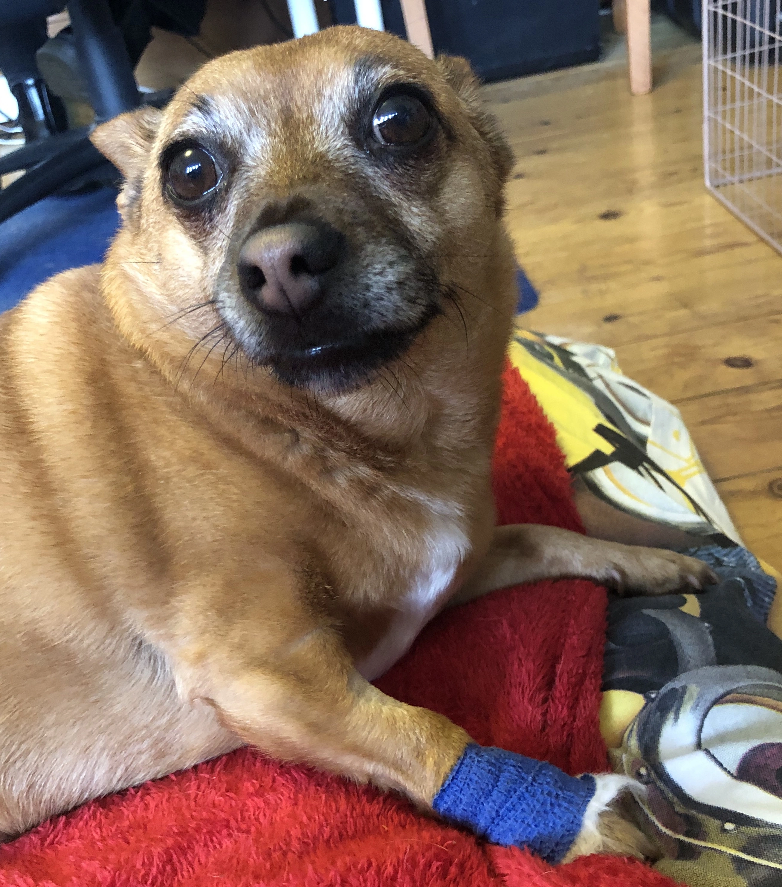

Standing On One Leg
[Kuma]: I didn't know you liked Nina Nesbitt (opens in a new tab).
[Jak]: Her song title just seemed to sum up what I'm going through. I'm going to have to get someone to play it for me.
[Kuma]: You do know that this section is supposed to be entertaining. No one wants to hear about sore paws!
[Jak]: I'll try, but this is a big deal for me. I didn't get any breakfast yesterday because of it.
[Kuma]: Go on then, but next time we'll post something fun. OK?
[Jak]: Well, when I was adopted, our humans were told that I might have trouble with my knees, something called luxating patellas (opens in a new tab). So when my leg started to hurt they assumed my knees were the problem.
[Kuma]: I've heard you squeal when you try to get up to chase the postman. I thought the postie was getting his own back for you pulling letters out of his hands.
[Jak]: Hah! I had x-rays at the vets before Christmas. That was hard. No breakfast! Being left at the vets for hours! The fur has just grown back in the shaved patch on my front paw.
I thought me and Mum were just going for a drive yesterday, but then we met Dad somewhere I didn't recognise.
[Kuma]: They took you to a place for small animals?
[Jak]: Don't go there. The nice vet at Liverpool University's Small Animal Teaching Hospital (opens in a new tab) did mention I needed to lose weight. I'm going to be so hungry! And I am small compared to some of the dogs I saw there.
[Kuma]: Keep on with the story. I've got some hunting to do.
[Jak]: There was a bit of chatting and I had to walk around the room, well, limp. Then, you know how it is, they grab you and make you stand on a table while someone strange pokes and prods you. I think I gave them all a shock when I couldn't help shouting out in pain.
[Kuma]: Good on you. They've got to know if they hurt you.
[Jak]: Then Mum and Dad are leaving me there...
[Kuma]: But they brought you back so don't get upset. I heard them say you had x-rays and a CT scan.
[Jak]: Yes, I had to have a scan as well because the vet found a lump in my neck. Turns out that it's just enlarged salivary glands so don't expect to have the run of the whole house just yet.
[Kuma]: I wasn't...I never...I saw you got a nice bandage this time. Lovely blue colour. Must've spotted the Everton badge in Mum's car. 
[Kuma]: Anyway, is it your knees?
[Jak]: I've torn my cruciate ligament. Going for an operation in a few weeks. Just have to have a lot of rest in the meantime. And lose some weight.
[Kuma]: Alan Shearer seemed to perform better after he recovered from his anterior cruciate ligament injury.
[Jak]: Who? What?
[Kuma]: I thought you'd watch 'Match of the Day' to keep well in with Mum. Shearer might only talk about football now, but a couple of lifetimes ago he actually played football for Blackburn Rovers. He got a similar injury to you, but was back playing the following season and scored more goals than ever.
[Jak]: You know I don't play ball.
[Kuma]: No. I've heard you're uncooperative.